Inherited DNA lesions may cause multiallelic mutations in nematodes
Abstract
By reanalyzing sequencing data from a large-scale C. elegans mutagenesis experiment, I’ve found evidence of multiallelic variants in many worms. Given the experimental design used in the original paper, I believe the most parsimonious explanation for these multiallelic variants is that parental DNA lesions are inherited by F1 animals, and later serve as templates for multiple rounds of DNA replication during F1 gametogenesis. Because every sequenced population comprises the offspring of a single F1, mosaicism in the F1’s gametes will generate multi-allelic variants in the sequencing reads.
Background
C. elegans mutagenesis
In 2020, Volkova et al.1 mutagenized C. elegans strains with about a dozen unique DNA damaging agents. Many of these strains harbored homozygous loss-of-function (LOF) alleles in genes related to DNA replication and repair, including translesion synthesis (polk-1), nucleotide excision repair (xpa-1, xpc-1, and xpf-1), and so on. The authors discovered that mutagens leave behind characteristic patterns of single-base substitutions, insertions/deletions, and larger structural variants; we refer to these patterns as “mutational signatures.” They also found that mutation rates and signatures often depend on genetic background (see Figure 1).
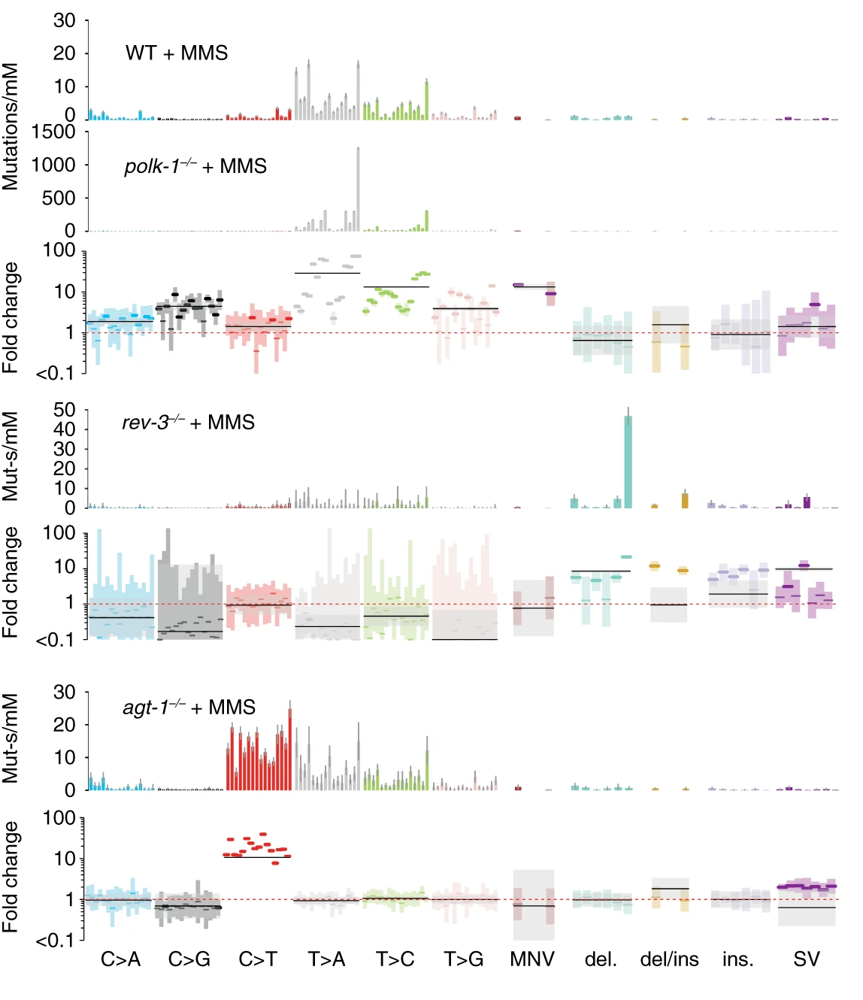
agt-1 alkyltransferase LOF mutants. agt-1 mutants cannot remove rare \(O^6\)-methylguanine lesions caused by MMS, resulting in an excess of C\(\rightarrow\)T mutations absent from WT strains. (Volkova et al. 2020, Nature Communications)
Lesion segregation
Also in 2020, Aitken et al.2 mutagenized over 200 mice with a potent DNA damage agent called DEN. By analyzing the specific nucleotide changes (e.g., A\(\rightarrow\)T vs. T\(\rightarrow\)A) created by single-nucleotide variants in these mutagenized mice, the authors observed a phenomenon they termed “lesion segregation.” “Lesion segregation” occurs when mutagenic lesions persist for at least one cell division following an initial burst of mutagen exposure. In that and many follow-up papers3, Aitken and colleagues discovered that persistent DNA lesions are engines of multi-allelic variation (see Figure 2).
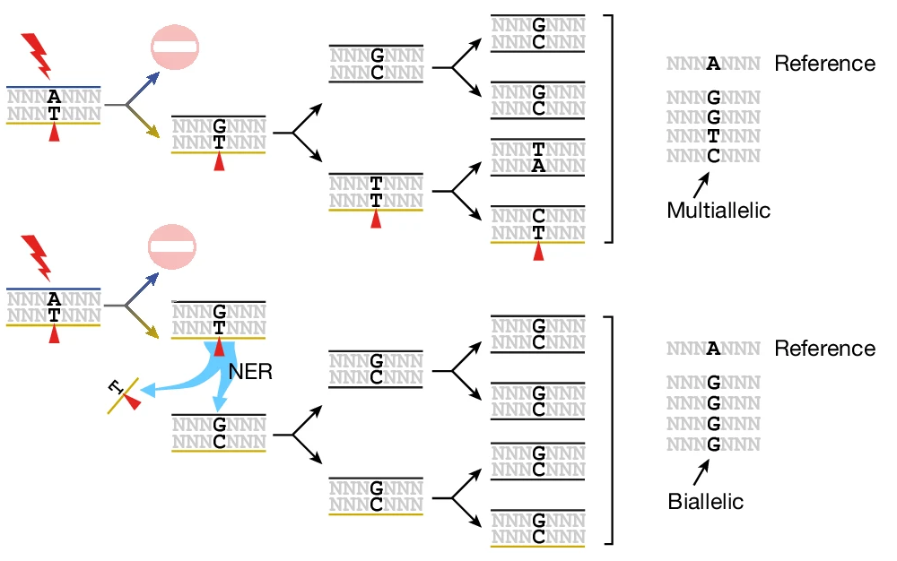
The C. elegans germline as a mutation “bottleneck”
The experimental strategy in Volkova et al. (2020) lets us make a few predictions about the kinds of mutations we’ll observe in sequenced nematodes.
- Mutagenize P0 worms.
- P0s were mutagenized at different life stages depending on the mutagen of interest. For now, we’ll focus on alkylating agents (EMS, MMS, DMS) and bulky adducts (Aflatoxin-B1, Aristocholic acid), which were applied to young adult (YA) worms.
- Transfer three mutagenized P0s to a single plate, let them lay eggs (which will develop into F1s), and remove adult P0s.
- Transfer two L4 F1s to two new plates (one per plate) and allow to proliferate.
- Choose a single expanded F1 population for sequencing.

Because a single F1 – the “child” of a mutagenized P0 – is used to initiate the clonal population of worms used for sequencing, we only expect to observe mutations derived from lesions that were present in the progenitors of a single P0 sperm cell and a single P0 egg cell.
As it’s more succintly described in the Methods section of Volkova et al. (2020):
The zygotes which lead to the F1 generation provide a single cell bottleneck where mutations of exposed male and female germ cells are fixed before being clonally amplified during C. elegans development and passed on to the next generation in a Mendelian ratio.
Results
Widespread evidence of multi-allelic mutations in mutagenized worms
I re-analyzed sequencing data from Volkova et al. (2020) and found compelling evidence for multi-allelic mutations in many mutagenized strains. All results below are derived from 712 strains treated with DMS, MMS, or EMS.
As an example, take a look at the single-nucleotide variants in Figure 3.
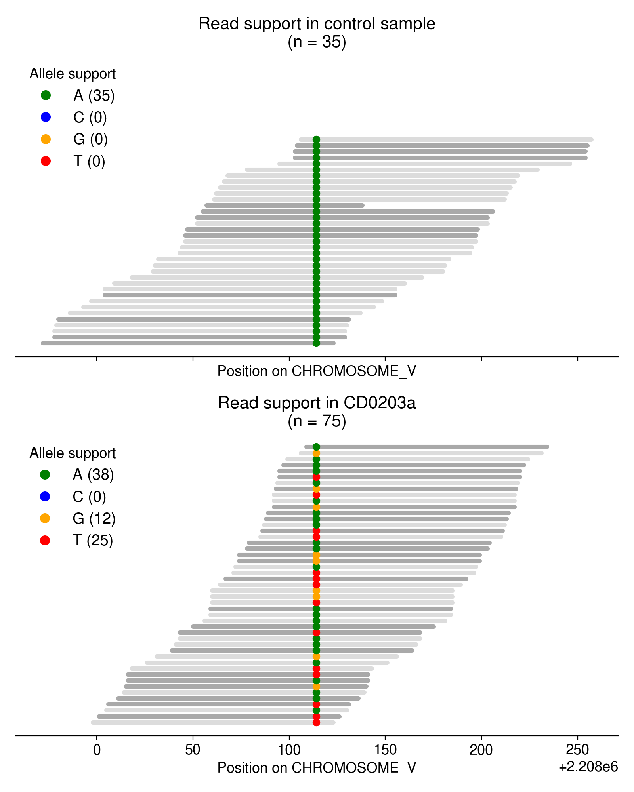
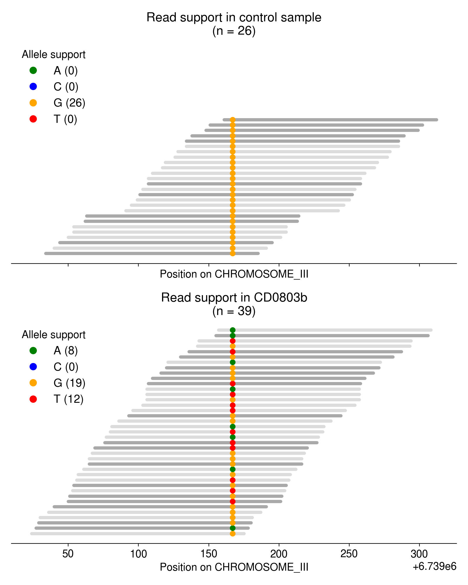
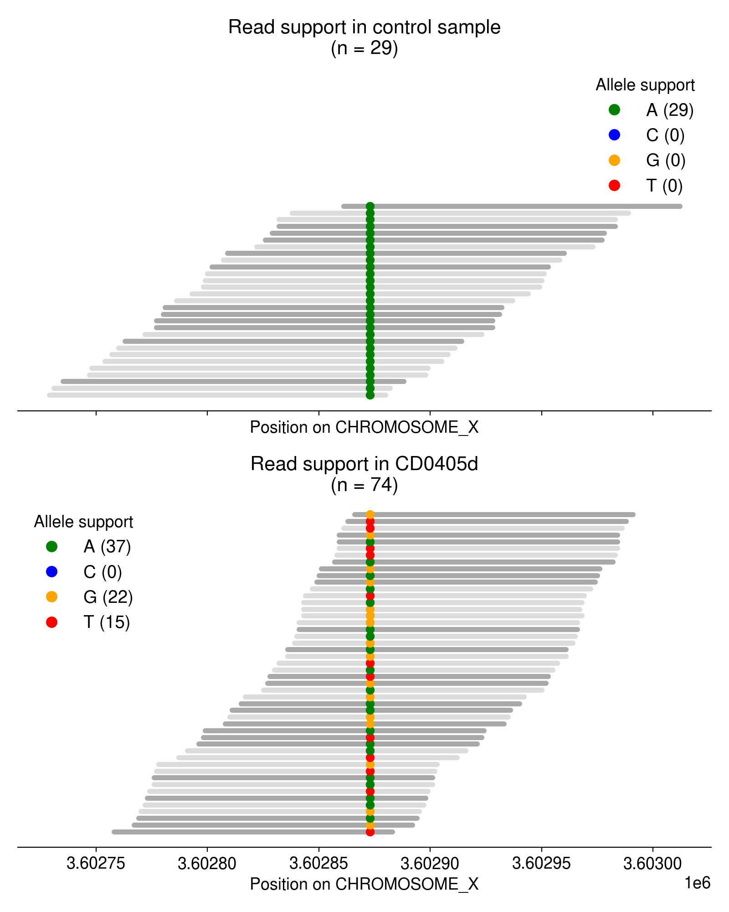
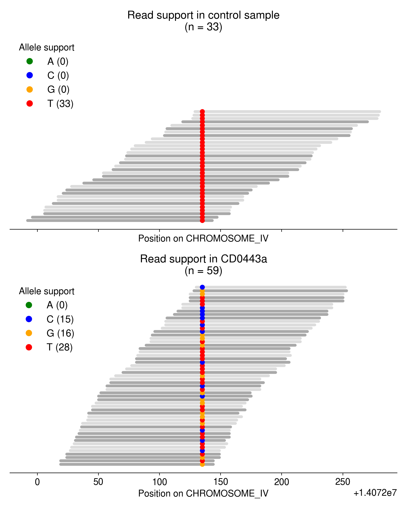
Most of these multi-allelic variants are supported by just 1 read, but requiring 2+ reads of support for the “third” allele removes the vast majority of candidate MAVs (Figure 4). Based on an extremely arbitrary guess at the “elbow” in the plot below, I require all MAVs to have at least 3 reads of support.
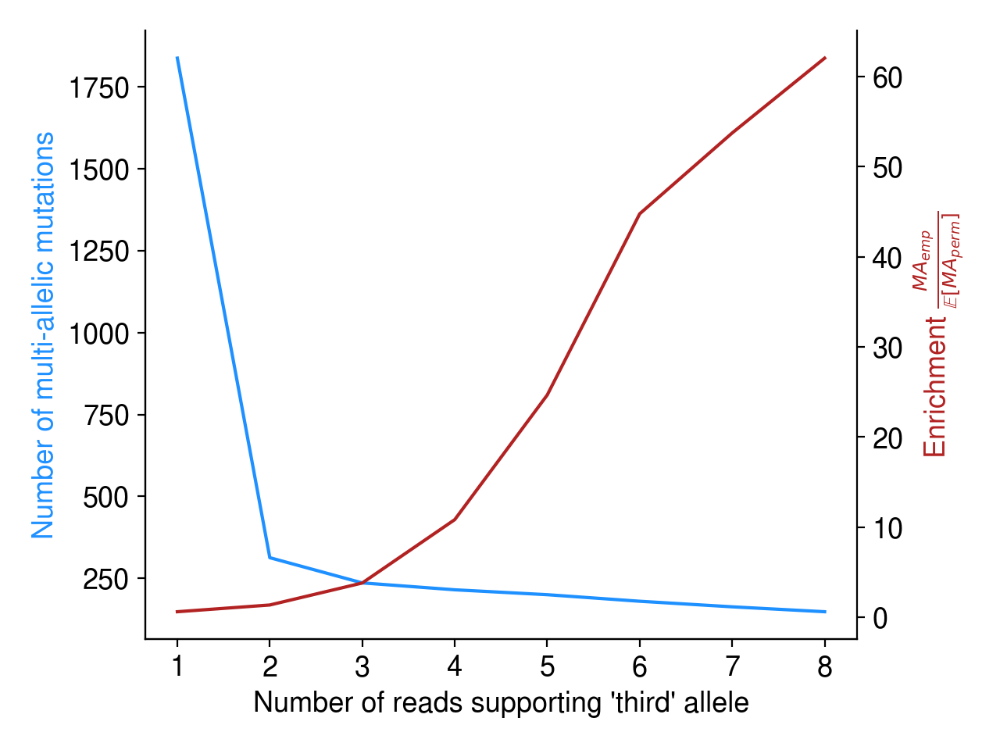
What might explain the presence of multiallelic variants?
Initially, I was surprised to see such robust evidence for multi-allelic mutations in these mutagenized worms. Because each sequenced population is derived from a single F1 animal, we should only observe mutations that were present in a single sperm and egg cell from a single mutagenized P0. And because sperm and egg cells are haploid, each gamete can only harbor a single allele — the zygote they form will therefore possess a maximum of two unique alleles.
As far as I can tell, there are a few possible explanations for these multi-allelic variants:
Bioinformatic artifacts (Note 1) are the most probable (and most disappointing) source of multi-allelic mutations. As I show below, however, I don’t think they are the cause.
Independent mutations/lesions at the same nucleotide (Note 2) seems extremely unlikely given the infinite sites assumption, and given the fact we observe so many multi-allelic mutations across independent strains.
Very low probability of multi-allelic mutations occurring by chance
As detailed in Note 1, bioinformatic artifacts may partly explain the abundance of multi-allelic mutations. How can we rule out the possibility of these artifacts?
First, we can use a simple permutation test to demonstrate that multi-allelic mutations are more frequent than we’d expect by chance. As described in Aitken et al. (2020), I simply permute the sample labels associated with every mutation identified in this dataset. Then, I collate the read evidence at each site (using a randomly permuted sample’s reads instead of the true sample’s reads) and ask if there is high-quality support for multiple alleles. Since a random sample is highly unlikely to harbor evidence for a mutation observed in a completely independent sample (i.e., its genotype should be HOM_REF), I consider these “multi-allelic” variants to be mutations with support for 2+ alleles.
Overall, the observed evidence for multi-allelic mutations is much greater than we’d expect by chance (Figure 5).
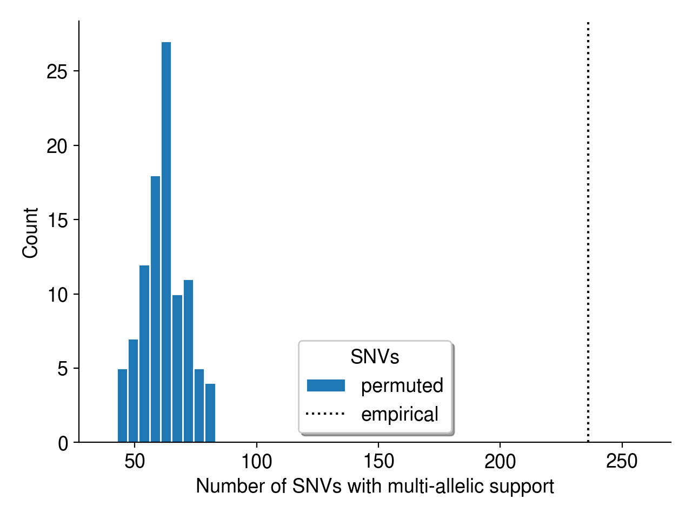
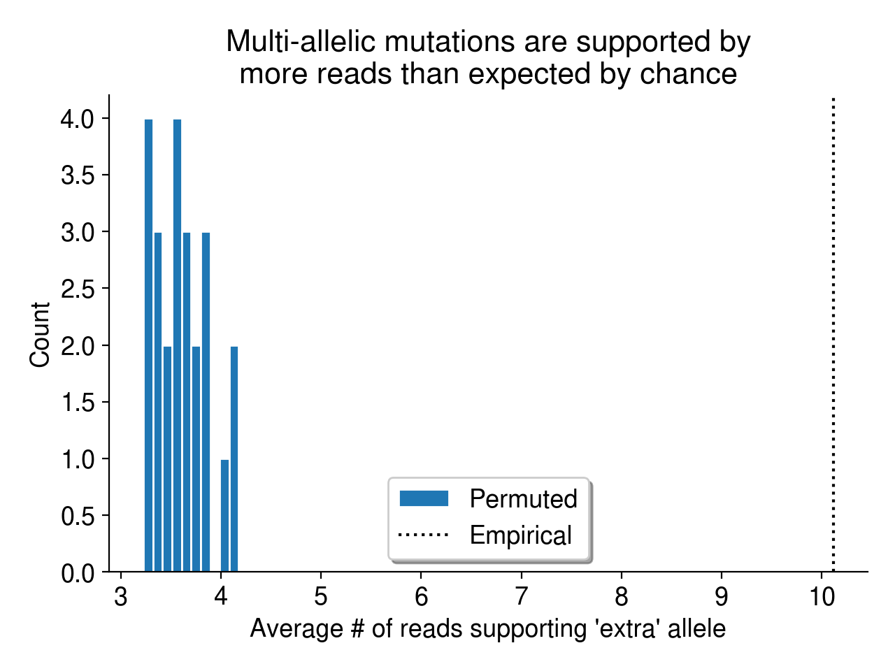
Multi-allelic mutations don’t occur in lower-complexity sequence
Another possible explanation for these multi-allelic mutations is that tools like BWA-MEM struggle to align reads in low-complexity, repetitive sequence, introducing base mismatches in the process. If MAVs tend to arise in low-complexity sequences, they might be a consequence of that repetitive nucleotide content rather than real biology. To check if this might be the case, I calculated the entropy of the sequence context surrounding every SNV in the dataset, including both MAVs and biallelic SNVs. Overall, the sequence context surrounding multi-allelic mutations is no less complex than the context surrounding biallelic mutations (Figure 6).
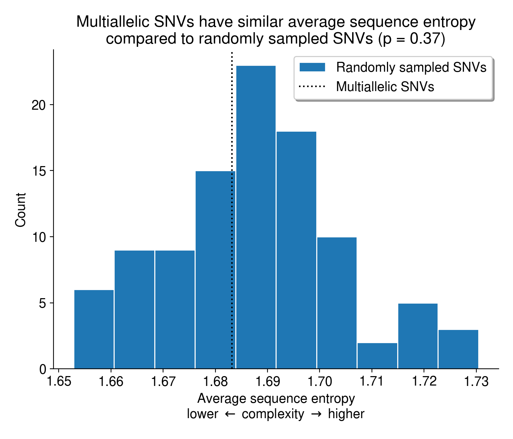
Could lesions be inherited from P0 to F1?
Given all of the sanity checks above, I think that the explanation in Note 3 might be plausible. Let’s walk through how it might happen. To do so, let’s first imagine how a mutagenized germ cell progenitor (i.e., a mitotic germ cell in the C. elegans gonad) might undergo both mitosis and meiosis to produce a haploid gamete (Figure 7).

Critically, if a haploid gamete harbors a lesion-containing strand, that lesion might end up in a fertilized zygote. And if it’s present in a fertilized zygote, there’s a chance it would end up in the \(P_4\) cell that gives rise to all germ cells in the F1 animal (see Figure 8). Because C. elegans development is perfectly characterized, we actually know exactly how long the lesion would have to persist to arrive in that \(P_4\) germ cell progenitor.

Precedence for inherited lesions causing mutations in C. elegans
This would not be the first evidence for persistent DNA lesions across generations in C. elegans. Recently, Wang et al. (2023)4 demonstrated that paternal exposure to ionizing radiation led to embryonic lethality in later generations of worms.
We show that paternal exposure to ionizing radiation results in genome instability in the F1 generation and transgenerational embryonic lethality. We determined that the paternal DNA damage is mainly repaired in the zygote through maternally provided error-prone polymerase theta-mediated end joining (TMEJ), which results in chromosomal aberrations. (Wang et al. 2023)
However, my re-analysis lets us compare the incidence of lesion persistence across mutagen exposure and genetic backgrounds.
Multi-allelic mutations after DMS and MMS, but not EMS, treatment
Intriguingly, some mutagens appear to create more multi-allelic mutations than others. Ethyl methanesulfonate (EMS), dimethyl sulfate (DMS) and methyl methanesulfonate (MMS) are all alkylating agents, but EMS treatment does not appear to produce more multi-allelic mutations than expected by chance (Figure 9). In the plots below, I aggregate all mutations caused by these mutations regardless of genetic background or dose. In C. elegans, the mutation spectra created by DMS and MMS exposure are very similar (mostly T \(\rightarrow\) N mutations), while EMS is dominated by C \(\rightarrow\) T mutations.
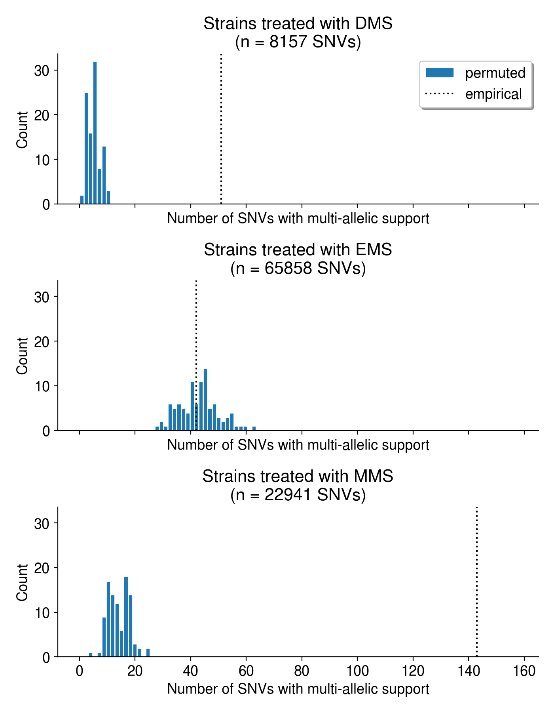